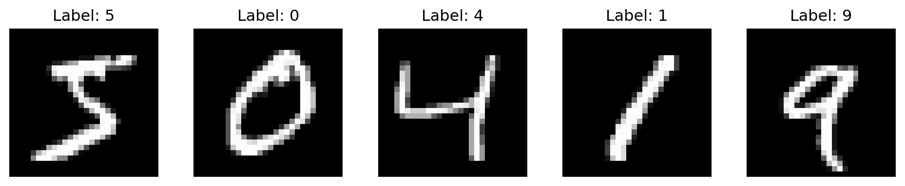

import matplotlib.pyplot as plt
import numpy as np
import torch
from torchvision import datasets, transforms
# Define the transformation (same as in the project)
transform = transforms.Compose([
transforms.ToTensor(),
transforms.Normalize((0.1307,), (0.3081,))
])
# Load the MNIST dataset using PyTorch
train_dataset = datasets.MNIST('./data', train=True, download=True, transform=transform)
test_dataset = datasets.MNIST('./data', train=False, download=True, transform=transform)
# Print basic dataset information
print(f"Training data size: {len(train_dataset)} samples")
print(f"Test data size: {len(test_dataset)} samples")
print(f"Image shape: {train_dataset[0][0].shape}")
print(f"Number of classes: {len(train_dataset.classes)}")
# Display sample images
plt.figure(figsize=(10, 2))
for i in range(5):
# Get a sample
image, label = train_dataset[i]
# Convert tensor to numpy array for plotting
image = image.squeeze().numpy()
# Plot
plt.subplot(1, 5, i+1)
plt.imshow(image, cmap='gray')
plt.title(f"Label: {label}")
plt.axis('off')
plt.tight_layout()
plt.show()/Users/zephyr/Developer/temp/mnist/.pixi/envs/default/lib/python3.10/site-packages/torchvision/io/image.py:14: UserWarning: Failed to load image Python extension: 'dlopen(/Users/zephyr/Developer/temp/mnist/.pixi/envs/default/lib/python3.10/site-packages/torchvision/image.so, 0x0006): Library not loaded: @rpath/libjpeg.9.dylib
Referenced from: <0B7EB158-53DC-3403-8A49-22178CAB4612> /Users/zephyr/Developer/temp/mnist/.pixi/envs/default/lib/python3.10/site-packages/torchvision/image.so
Reason: tried: '/Users/zephyr/Developer/temp/mnist/.pixi/envs/default/lib/python3.10/site-packages/torchvision/../../../libjpeg.9.dylib' (no such file), '/Users/zephyr/Developer/temp/mnist/.pixi/envs/default/lib/python3.10/site-packages/torchvision/../../../libjpeg.9.dylib' (no such file), '/Users/zephyr/Developer/temp/mnist/.pixi/envs/default/lib/python3.10/lib-dynload/../../libjpeg.9.dylib' (no such file), '/Users/zephyr/Developer/temp/mnist/.pixi/envs/default/bin/../lib/libjpeg.9.dylib' (no such file)'If you don't plan on using image functionality from `torchvision.io`, you can ignore this warning. Otherwise, there might be something wrong with your environment. Did you have `libjpeg` or `libpng` installed before building `torchvision` from source?
warn(Training data size: 60000 samples
Test data size: 10000 samples
Image shape: torch.Size([1, 28, 28])
Number of classes: 10